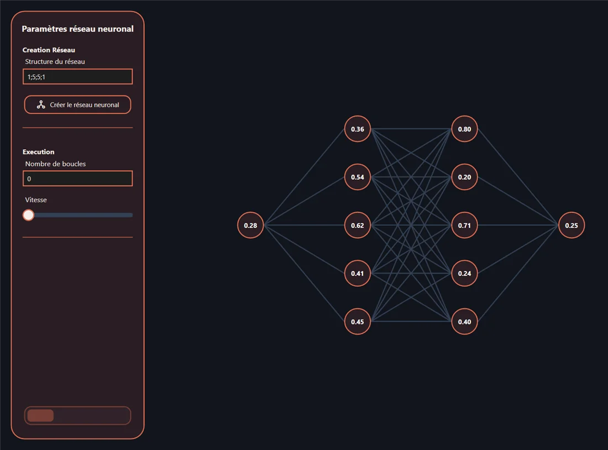

Un réseau de neurones codé sans bibliothèque
Pour comprendre vraiment comment une intelligence artificielle « apprend », j'ai programmé un réseau de neurones de A à Z, sans aucune bibliothèque d'IA. L'application permet de choisir la forme du réseau, de lancer son entraînement et de voir les valeurs de chaque neurone évoluer à l'écran.
- Cadre
- Projet personnel
- Dates
- Mars à mai 2026, en parallèle de l'alternance
- Équipe
- Seul
- Technologies
- C#, .NET 10, WPF (liaison de données, contrôles personnalisés, programmation asynchrone)
- Lien
- Code source sur GitHub
Pourquoi ce projet
On utilise l'IA partout, mais on la manipule presque toujours à travers des bibliothèques qui cachent son fonctionnement. Je voulais comprendre ce qui se passe à l'intérieur : comment un réseau calcule une réponse, comment il mesure son erreur et comment il se corrige.
Le plus sûr moyen de comprendre était de tout écrire moi-même, avec les mathématiques sous les yeux, dans le langage que j'utilise tous les jours en alternance.
Ce que fait l'application
- Construire un réseau à la demande : on décrit sa forme par une simple ligne de texte, par exemple
1;5;5;1(1 entrée, deux couches cachées de 5 neurones, 1 sortie). - Visualiser le réseau : chaque neurone est dessiné avec sa valeur actuelle, relié à ceux de la couche suivante ; l'affichage se recalcule et se centre selon la taille du réseau.
- Entraîner le réseau : un bouton lance l'apprentissage sur un jeu de données, avec une barre de progression. Les réglages du nombre de boucles et de la vitesse sont déjà dans l'interface, mais pas encore reliés au calcul.
- Garder l'interface fluide pendant les calculs, qui peuvent durer plusieurs secondes.

Comment le réseau apprend
L'apprentissage tient en deux étapes, répétées des milliers de fois :
- Propagation avant : les valeurs d'entrée traversent le réseau couche par couche. Chaque neurone additionne les valeurs reçues, pondérées par des « poids », ajoute un « biais », puis passe le résultat dans une fonction d'activation (la sigmoïde) qui le ramène entre 0 et 1.
- Rétropropagation : on compare la réponse obtenue à la réponse attendue, puis on remonte l'erreur de la sortie vers l'entrée pour corriger légèrement chaque poids et chaque biais (taux d'apprentissage de 0,1).
Pour vérifier que l'ensemble fonctionne, j'ai commencé par une tâche dont je connais la réponse : apprendre au réseau à recopier le nombre qu'on lui donne, à partir de 1 000 exemples générés aléatoirement.
Défis techniques et solutions
Passer d'un prototype figé à un réseau de n'importe quelle forme
Ma première version, en mars 2026, avait une structure écrite en dur dans le code : changer le nombre de neurones obligeait à réécrire les tableaux à la main. Dans la seconde version, la structure est générée automatiquement à partir de la description texte, et le code est séparé en couches : la logique du réseau d'un côté, sa création de l'autre, et l'affichage dans des contrôles WPF dédiés.
Ne pas figer l'écran pendant l'entraînement
L'entraînement enchaîne un million de calculs (1 000 exemples × 1 000 boucles). Lancé tel quel, il bloquait la fenêtre jusqu'à la fin. J'ai rendu le traitement asynchrone et je redonne la main à l'interface toutes les 10 boucles : la barre de progression avance et l'application reste utilisable.
Afficher un réseau qui change de taille
Un réseau de 3 neurones et un réseau de 30 ne tiennent pas dans le même espace. J'ai créé des contrôles personnalisés (neurone, liaison, réseau) qui calculent la position de chaque élément à partir du nombre de couches et de neurones, puis recentrent le dessin quand la fenêtre change de taille.
Avec le recul : ce que je ferais autrement
- Séparer le calcul de l'affichage. Chaque neurone est un objet qui prévient l'interface à chaque changement de valeur : pendant l'entraînement, cela fait des millions de notifications inutiles. Je stockerais les poids dans de simples tableaux pour les calculs, et je ne mettrais l'affichage à jour qu'à intervalle régulier.
- Choisir un vrai problème de test. Recopier un nombre prouve que le code tourne, pas que le réseau apprend quelque chose d'intéressant. Je passerais à un cas classique, comme le problème du « OU exclusif » ou la reconnaissance de chiffres manuscrits, avec des données d'entraînement et des données de test séparées.
- Mesurer et vérifier. Je n'affiche pas l'évolution de l'erreur, donc je ne sais pas précisément quand le réseau a fini d'apprendre. J'ajouterais une courbe d'erreur et des tests unitaires qui comparent la propagation à des valeurs calculées à la main.
- Utiliser Git dès le premier jour. Mes versions successives sont des copies de dossiers, ce qui rend la progression difficile à retracer et à montrer.
Ce que ce projet m'a appris
- Le fonctionnement interne d'un réseau de neurones : poids, biais, fonction d'activation, calcul de l'erreur et descente de gradient.
- L'intérêt de repartir d'un prototype pour en faire une version propre et générique.
- Des notions WPF que j'utilise aussi en alternance : liaison de données, contrôles personnalisés, styles et traitements asynchrones.
Suite du projet
- Neuroévolution : j'ai commencé une seconde approche, où le réseau ne se corrige plus par calcul d'erreur mais par sélection, comme dans la nature : on garde et on copie les réseaux qui obtiennent le meilleur score, en y ajoutant de petites variations.
- Entraîner le réseau sur des problèmes plus intéressants que la recopie, et afficher l'évolution de l'erreur sous forme de courbe.
- Colorer les liaisons selon la valeur de leur poids pour voir le réseau « apprendre » en direct.
← Projet précédent : Sirene · Projet suivant : application d'échecs →